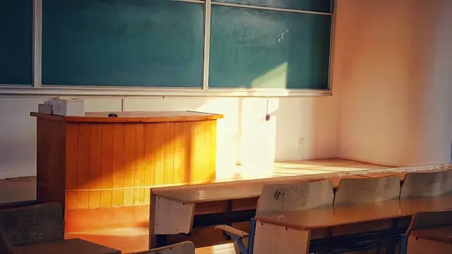
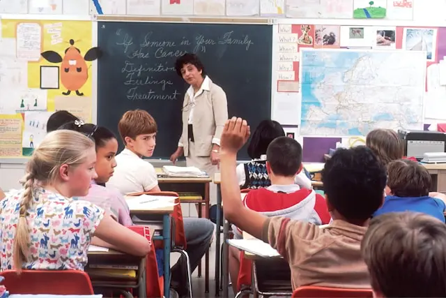
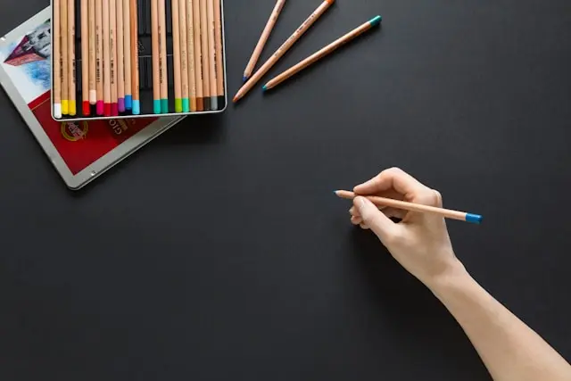

Tentang Saya
Halo! Saya AHMAD REVALDO, seorang mahasiswa Informatika yang antusias di bidang teknologi dan pengembangan web. Saya senang memecahkan masalah melalui logika, desain antarmuka, dan kode yang efisien. Bagi saya, setiap proyek adalah peluang untuk belajar, berinovasi, dan menciptakan sesuatu yang bermanfaat bagi banyak orang. Saat tidak ngoding, saya suka bereksperimen dengan desain dan mencari inspirasi dari dunia digital di sekitar saya.
250+
Siswa Per tahun
40+
Guru Bersertifikat
100+
prestasi tingkat nasional

Literasi
Mengembangkan kemampuan berpikir kritis, berkomunikasi, dan memahami dunia sekitar.

Praktik
Memahami dan melatih keterampilan, dan mengembangkan kemampuan berpikir.

Kreativitas
Mengembangkan kemampuan berpikir kreatif, mengekspresikan diri, dan rasa percaya diri.